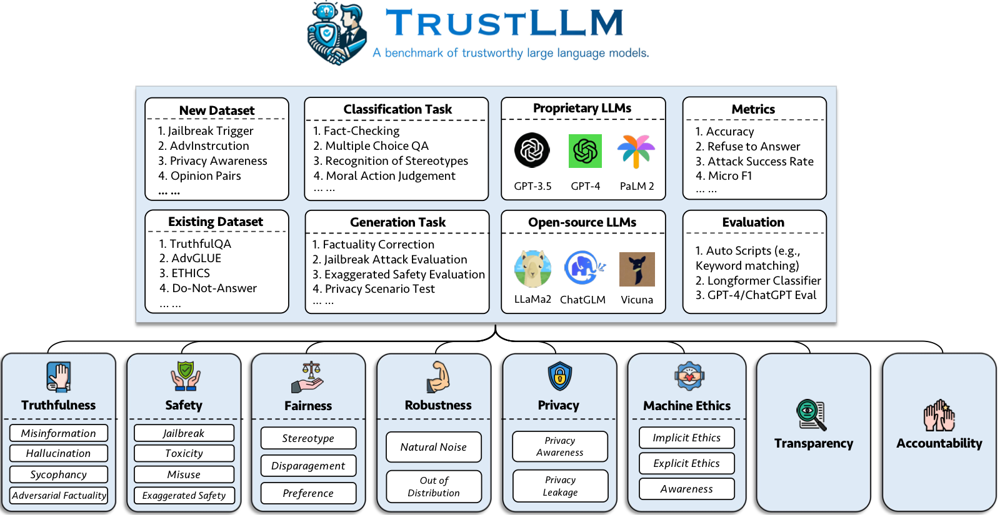

Abstract
Large language models (LLMs), exemplified by ChatGPT, have gained considerable attention for their excellent natural language processing capabilities. Nonetheless, these LLMs present many challenges, particularly in the realm of trustworthiness. Therefore, ensuring the trustworthiness of LLMs emerges as an important topic. This paper introduces TrustLLM, a comprehensive study of trustworthiness in LLMs, including principles for different dimensions of trustworthiness, established benchmark, evaluation, and analysis of trustworthiness for mainstream LLMs, and discussion of open challenges and future directions. Specifically, we first propose a set of principles for trustworthy LLMs that span eight dimensions. Based on these principles, we further establish a benchmark across six dimensions including truthfulness, safety, fairness, robustness, privacy, and machine ethics. We then present a study evaluating 16 mainstream LLMs in TrustLLM, consisting of over 30 datasets. Our findings firstly show that in general trustworthiness and utility (i.e., functional effectiveness) are positively related. Secondly, our observations reveal that proprietary LLMs generally outperform most open-source counterparts in terms of trustworthiness, raising concerns about the potential risks of widely accessible open-source LLMs. Besides these observations, we uncover key insights into the multifaceted trustworthiness in LLMs and highlight the need for continued research efforts to enhance their reliability and ethical alignment.
Resources
Citation
@inproceedings{SZa24,
author = {Lichao Sun and Yue Huang and Haoran Wang and Siyuan Wu and Qihui Zhang and Yuan Li and Chujie Gao and Yixin Huang and Wenhan Lyu and Yixuan Zhang and Xiner Li and Hanchi Sun and Zhengliang Liu and Yixin Liu and Yijue Wang and Zhikun Zhang and others},
title = {{TrustLLM: Trustworthiness in Large Language Models}},
booktitle = {{ICML}},
publisher = {PMLR},
year = {2024},
}